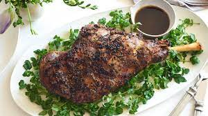

King's Cuisine I
Quadzilla Burger
Ingredients
2 kg leg of lamb or hogget
1 bulb of garlic
½ a bunch of fresh rosemary
1 lemon
olive oil
1/2 Cup (8 tbs) of Caramelized onions
1 bunch of fresh mint
1 teaspoon sugar
3 tablespoons wine vinegar

- Remove the lamb from the fridge 1 hour before you want to cook it, to let it come up to room temperature.
- Preheat the oven to 200ºC/400ºF/gas 6 and place a roasting dish for the potatoes on the bottom.
- Break the garlic bulb up into cloves, then peel 3, leaving the rest whole. Pick and roughly chop half the rosemary leaves. Peel and halve the potatoes.
- Crush the peeled garlic into a bowl, add the chopped rosemary, finely grate in the lemon zest and drizzle in a good lug of oil, then mix together.
- Season the lamb with sea salt and black pepper, then drizzle with the marinade and rub all over the meat. Place on the hot bars of the oven above the tray.
- Parboil the potatoes in a pan of boiling salted water for 10 minutes, then drain and allow to steam dry.
- Gently toss the potatoes in the colander to scuff up the edges, then tip back into the pan.
- Add the remaining rosemary sprigs and whole garlic cloves to the potatoes, season with salt and pepper, then drizzle over a good lug of oil.
- Tip the potatoes into the hot tray and place back under the lamb to catch all the lovely juices.
- Cook the lamb for 1 hour 15 minutes if you want it pink, or 1 hour 30 minutes if you like it more well done.
- Meanwhile, make the mint sauce. Pick and finely chop the mint leaves, then place in a small bowl. Mix in the sugar, a good pinch of salt, 1 tablespoon of hot water and the vinegar.
- When the lamb is cooked to your liking, remove from the oven and leave to rest for 15 minutes or so. Carve and serve with the roast potatoes, mint sauce and some seasonal greens.